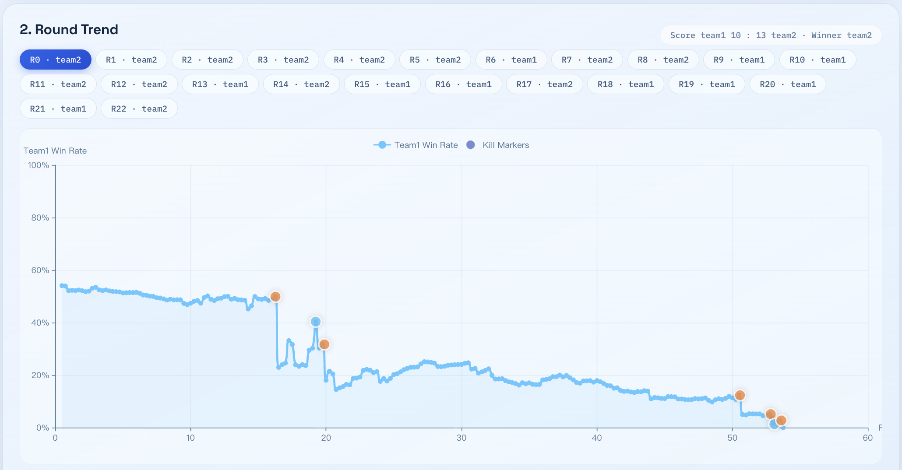
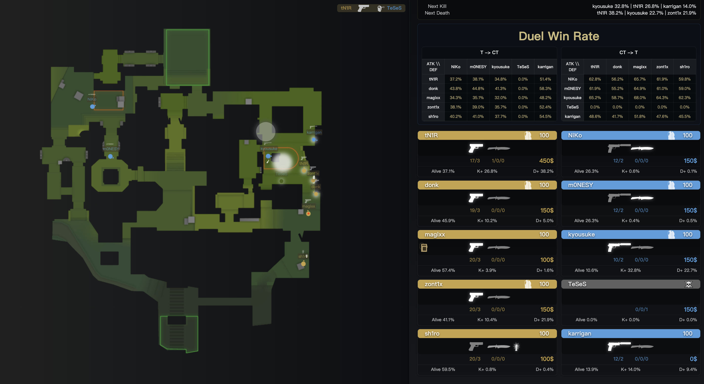
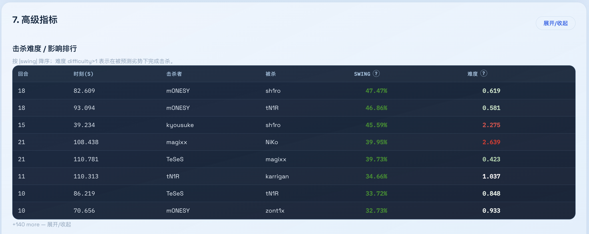
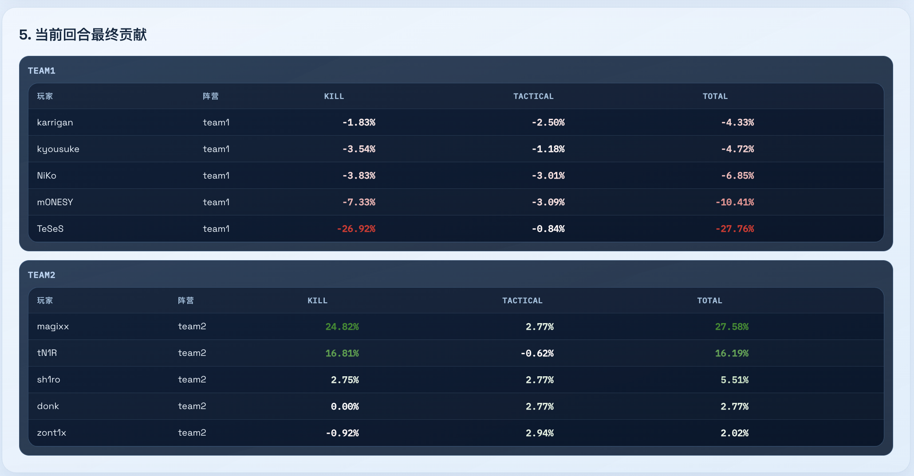
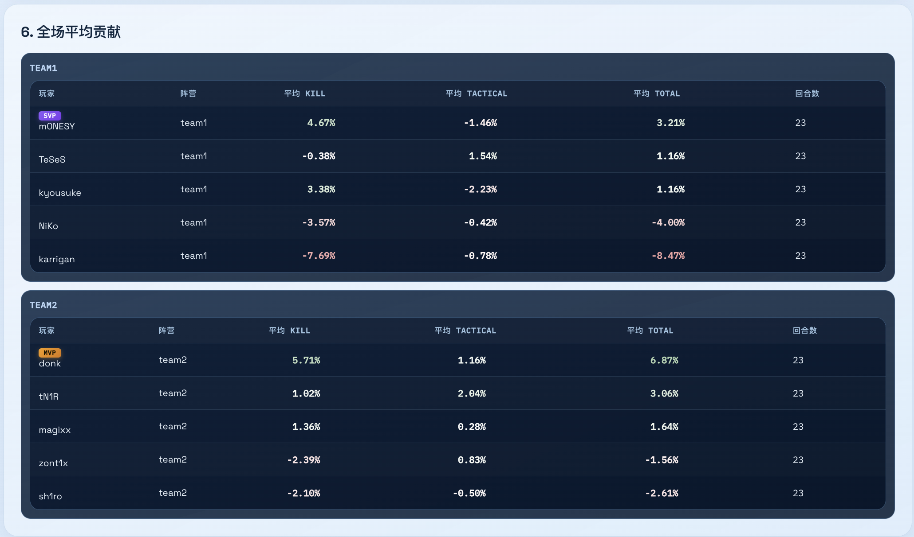
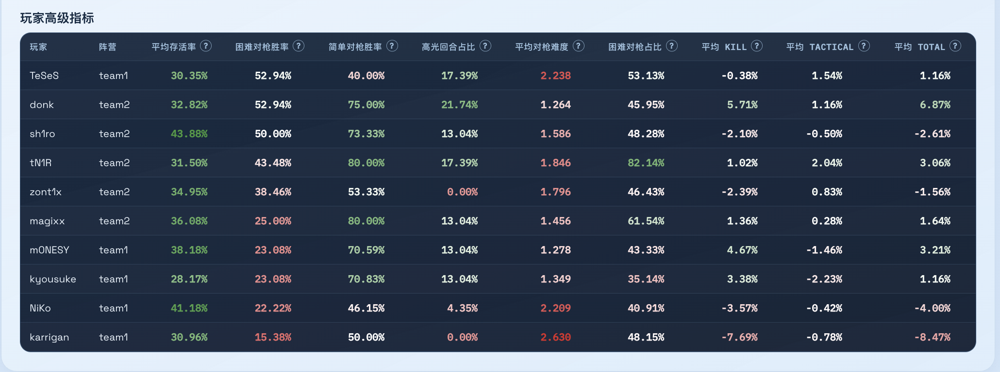

基于 Transformer 的 Counter-Strike 2 比赛深度学习分析框架。上传 Demo，一键获取胜率、击杀、死亡、存活、对决胜率五大预测。 A Transformer-based deep learning framework for CS2 match analysis. Upload a demo and get five real-time predictions — win rate, kill, death, survival, and duel — all at once.
给定一段 CS2 比赛回放，模型能同时输出五种实时预测，覆盖从宏观胜负到微观对枪的完整分析链路。 Given a CS2 match replay, the model outputs five real-time predictions simultaneously — from macro win probability to micro duel outcomes.
当前回合 Team1（按攻防映射）最终获胜的概率Probability that Team1 (mapped by side) wins the current round
输出: 标量 [0, 1]Output: scalar [0, 1]每个玩家在本回合结束时仍然存活的概率Per-player probability of surviving to the end of the round
输出: 10 个概率值Output: 10 probabilities哪个玩家最可能拿到下一次击杀Which player is most likely to get the next kill
输出: 10+1 类概率分布Output: 10+1 class distribution哪个玩家最可能成为下一次阵亡者Which player is most likely to die next
输出: 10+1 类概率分布Output: 10+1 class distribution任意 CT-T 玩家对之间的 1v1 胜率矩阵1v1 win probability matrix for every CT-T player pair
输出: 5×5 概率矩阵Output: 5×5 matrixWindows EXE 开箱即用，一键启动本地 Web 分析面板，支持中文 / English 双语。 Plug-and-play Windows EXE. One click to launch the local web dashboard, with bilingual Chinese / English support.
带击杀标记的逐 tick 胜率变化曲线，一目了然看到局势转折。Per-tick win-rate curve with kill markers — see momentum shifts at a glance.
鼠标悬停时间线同步刷新，在真实地图上画出玩家位置、阵营颜色、存活状态。Hover the timeline to sync player positions, team colors, and alive/dead state on the real minimap.
四头模型输出完整展开：存活概率、击杀/阵亡分布、5×5 对决胜率矩阵。Full output from all four heads: survival probability, kill/death distribution, 5×5 duel matrix.
全场聚合：平均 kill/death/survive 概率、硬仗/易仗胜率、highlight 率、关键击杀排行。Match-wide aggregates: avg kill/death/survive probability, hard/easy duel win rate, highlight rate, clutch rankings.
接入 OpenAI 兼容 LLM，流式输出 + Markdown 渲染，自动带入攻防上下文降低幻觉。Connect any OpenAI-compatible LLM for streaming Markdown summaries with side-context to reduce hallucination.
一键在新标签页播放 demo，包含烟雾/闪光/手雷弹道，叠加 CS-NET 预测时间线。One-click replay in a new tab with smoke/flash/grenade trajectories and CS-NET prediction overlays.
基于全场贡献值自动评选 MVP 和 SVP。Automatically awards MVP and SVP based on match-wide contribution scores.
API Key、模型路径、语言等偏好自动存入浏览器本地存储。API key, model path, language, and other settings are persisted in browser local storage.
左右滑动浏览，悬浮放大查看细节，点击查看原图。 Swipe to browse, hover to zoom, click to view full size.






预装所有模型权重，无需额外下载，双击即用。 All model weights pre-packaged. No extra downloads — just double-click and run.
v2.1.0
cs-net-windows.zip
包含完整运行环境 + 模型权重，解压后双击 cs-net.exe 即可启动
Includes full runtime + model weights. Unzip and double-click cs-net.exe to launch.
模型权重同时在 Hugging Face 🤗 提供，供 Python 用户单独下载。 Model weights are also available on Hugging Face 🤗 for Python users.
以下方式二选一：Windows 用户推荐 EXE；开发者可直接运行 Python 源码。 Two options: Windows users can use the EXE; developers can run from Python source.
下载 cs-net-windows.zip，解压后双击 cs-net.exe。浏览器自动打开 http://127.0.0.1:7860。Download cs-net-windows.zip, unzip, and double-click cs-net.exe. Your browser opens automatically at http://127.0.0.1:7860.
模型权重已内置在 EXE 中，无需额外下载。Model weights are built into the EXE — no extra downloads needed.
适合需要在源码基础上修改或二次开发的用户。For users who want to modify the source or build on top of it.
conda create -n cs-net python=3.10 conda activate cs-net pip install -r requirements.txt
将预训练模型下载到 ./cs-net-models/（EXE 用户跳过此步）。Download pre-trained models to ./cs-net-models/ (skip if using EXE).
python -m scripts.download_model
也可以从 Hugging Face 手动下载。Or download manually from Hugging Face.
将 CS2 的 .dem 回放文件解析为结构化 JSON。Parse a CS2 .dem replay file into structured JSON.
python -m data.process_demo \ -path examples/your_match.dem \ -interval 0.25 \ -out examples/your_match.json
python -m demo_analysis.web_app
打开 http://127.0.0.1:7860，上传 JSON 文件，选择模型目录和设备，点击开始分析。Open http://127.0.0.1:7860, upload a JSON file, select the model directory and device, then click Start Analysis.
填写 OpenAI 兼容的 API Key、模型名和 Base URL，选择语言，点击生成 AI Review 即可获得流式输出的赛后总结。Fill in your OpenAI-compatible API key, model name, and base URL, pick a language, and click Generate AI Review for a streaming post-match summary.